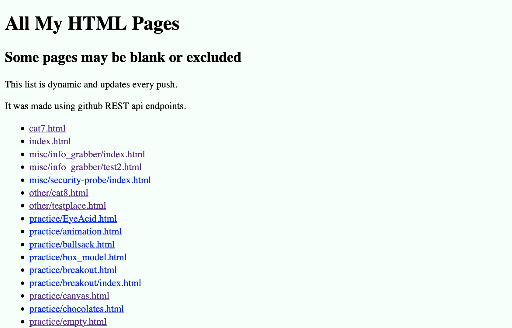

HTML Index
December 15, 2025

HTML index
This page dynamically parses my github repo for every .html file it then creates a link to it,
displaying the name/path on a list. The page works useing githubs REST API, and constructs the
URL useing the git-trees endpoint, making a dynamic index that refreshes every push.
This project was made to solve an orginzation issue I struggled with for months.
In my Comp-sci classesI would commonly make a new html file for every new concept I learned.
These html documents were rarely orgainzed and it was very difficult to remember the path for
every single one. They ended up not only pileing up, but also getting lost, witch was difficult
as they were great refrences.